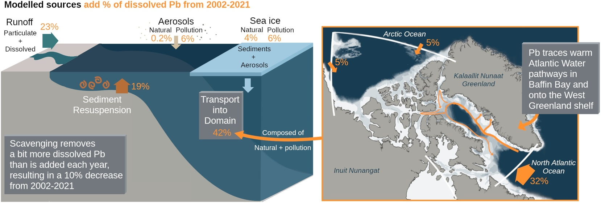

Modeling Dissolved Pb Concentrations in the Western Arctic Ocean: The Continued Legacy of Anthropogenic Pollution

Abstract: Over the past decade, the international GEOTRACES program has greatly expanded the coverage of dissolved lead (dPb) observations in the western Arctic Ocean including the Canada Basin and the Canadian Arctic Archipelago. However, it is difficult to quantify the drivers of the spatial distribution and seasonal variability of dPb concentrations using observations alone. Here, we present a three-dimensional model of dPb concentrations in the western Arctic Ocean with experiments from 2002 to 2021 to assess our current understanding of dPb cycling. The dPb model illustrates the impact of current and historical anthropogenic pollution on dPb concentrations in the Arctic Ocean, which accounts for at least 28% of dPb addition to the region, through aerosol deposition and net transport from other ocean basins. Advected water masses from the Pacific and North Atlantic Oceans convey elevated pollution-derived dPb concentrations to the Arctic and play a key role, contributing 43% to the annual dPb budget. The Labrador Sea is a net source of dPb to Baffin Bay via the West Greenland Current. Within Baffin Bay, simulated dPb concentrations track the seasonal extension of warm Atlantic Water along the West Greenland shelf and occasional dense overflows of Atlantic Water into the deep Baffin Bay interior. While dPb concentrations in the western Arctic Ocean are low, the dPb model simulations presented here show that anthropogenic pollution continues to impact the Pb budget in this region, consistent with recent observational work, and demonstrate the use of dPb as a tracer of Atlantic and Pacific Water masses.
Manuel Colombo
Assistant Professor of Marine Science
Biogeochemistry Across Boundaries // VIMS and W&M